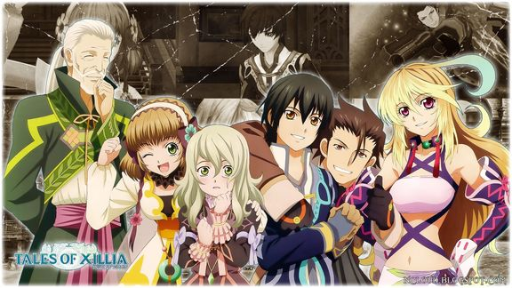

Tales of Xillia
Rating: 8.8/10
The Tales series has a long history, and some games in particular – think Phantasia, Destiny, or Symphonia – hold a special place in my heart. Xillia isn’t better than any of those entries in my estimation, but it certainly is a worthy addition to the storied Tales franchise. Indeed, it’s no surprise that its sequel was so quickly green-lit and released in Japan (with a western localization coming in 2014). Xillia’s ability to nurture Tales’ traditions while adding its own flavor to the mix is perhaps its greatest strength, and while it suffers from occasionally corny moments and a subpar graphical look, its weaknesses are overwhelmed by its complex systems, fun combat, interesting stories, and a compelling party of characters, not to mention its dueling protagonists. Tales of Xillia is a must-play for Tales fans and JRPG freaks alike.